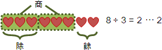
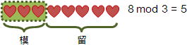
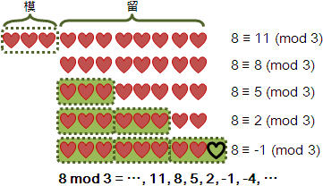
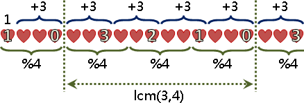
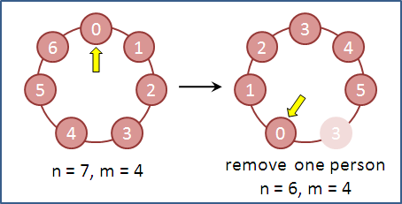

Residue
程度★ 難度★
高者抑之，下者舉之；有餘者損之，不足者與之。《老子》
除數與餘數
整數除法：被除數除以除數得到商數與餘數。分堆到底為止。
模數與留數
可以分堆、補堆任意次數的時候，除數就變成了「模數」，餘數就變成了「留數」。
餘數只有一個，留數有無限多個。只要隨便求出一個餘數，不斷加減模數，就得到各個留數；各個留數皆平等，任選一個當代表都行。一般使用≡全等符號表示各個留數兩兩之間的平等關係。
中文當中，習慣把留數也稱作餘數。以下皆用餘數稱呼留數。
備註
被除數 dividend 除數 divisor 商數 quotient 餘數 remainder 模數 modulus 留數/殘數/殘值/餘數 residue 全等/同餘 congruence
residue一般是指「殘值」，例如殘值定理；在餘數系統，則是指「餘數」，是一個實際數值。
congruence一般是指「全等」，例如三角形全等；在餘數系統，則是指「同餘」，是一種抽象概念，是一個運算符號。
計算學家重視數值，因此演算法書籍喜愛討論residue；數學家重視性質，因此數學書籍喜愛討論congruence。
實數運算，等於=不是主角，加減乘除才是主角；餘數運算，同餘≡當然也不是主角，加減乘除才是主角。
因此接下來將要討論residue的加減乘除。
加法與減法
程度★ 難度★★
加法
模數相同時，餘數可相加。
8 (mod 3) + 7 (mod 3) ≡ 15 (mod 3) 8 (mod 3) + 7 (mod 3) + 6 (mod 3) ≡ 21 (mod 3)
模數相同時，mod符號可以精簡成一個，寫在式子後面。
8 + 7 ≡ 15 (mod 3) 8 + 7 + 6 ≡ 21 (mod 3)
餘數有無限多個，寫哪一個都行。通常是寫最接近零、大於等於零的那一個。
8 + 7 ≡ 2 + 1 ≡ (-1) + (-5) ≡ 15 ≡ 3 ≡ 0 ≡ -3 (mod 3)
餘數加法實際上是「無限多個」加「無限多個」等於「無限多個」。這三項當中，任取一個餘數當代表都行，等式皆成立。然而實際計算時，大可不必想得如此複雜，就是加與模而已。
寫程式時，可以隨時模，以避免溢位。也可以等數字很大才模，以省點時間。
減法、負數
模數相同時，餘數可相減。
8 - 7 ≡ 1 (mod 3) 8 - 7 - 6 ≡ -5 (mod 3)
減，即是加上負數。
8 - 7 ≡ 8 + (-7) (mod 3) 8 - 7 - 6 ≡ 8 + (-7) + (-6) (mod 3)
UVa 10787
連加（連減）導致循環
循環是餘數系統的最大特色！
從2開始，不斷加0。 2 + 0 ≡ 2 (mod 4) ......開始循環：2 循環長度為1。
從0開始，不斷加1。 0 + 1 ≡ 1 (mod 4) 1 + 1 ≡ 2 (mod 4) 2 + 1 ≡ 3 (mod 4) 3 + 1 ≡ 0 (mod 4) ......開始循環：0->1->2->3 循環長度為4。
從1開始，不斷加2。 1 + 2 ≡ 3 (mod 4) 3 + 2 ≡ 1 (mod 4) ......開始循環：1->3 循環長度為2。
從1開始，不斷加3。 1 + 3 ≡ 0 (mod 4) 0 + 3 ≡ 3 (mod 4) 3 + 3 ≡ 2 (mod 4) 2 + 3 ≡ 1 (mod 4) ......開始循環：1->0->3->2 循環長度為4。
把連加數和模數累計起來，畫在數線上，就容易觀察了。
循環範圍是「連加數與模數的最小公倍數」。
循環長度是「循環範圍除以連加數」，也就是「最小公倍數除以連加數」；也等於「模數除以最大公因數」。
循環長度 v.s. 互質、整除
根據循環長度的數學公式：
當連加數與模數有互質關係（最大公因數等於一），就產生最長的循環，循環長度等於模數大小，遇到全部數字。
當連加數與模數有整除關係、互為因數與倍數（最大公因數等於連加數、或者模數），就產生最短的循環，循環長度等於一。
舉例來說，當模數是質數，或者連加數是質數，就鐵定互質，就鐵定產生最長的循環、遇到全部數字。
如果想讓別人加到手痠，那麼你可以採用質數作為模數、連加數。當然，是對於那些還不會寫程式的人。:)
延伸閱讀：模數不一致的加法
必須枚舉所有餘數，窮舉各種相加方式。雞肋。
1 (mod 4) + 1 (mod 6)
≡ ⋯ ∪ { 1 (mod 4) + -5 }
∪ { 1 (mod 4) + 1 }
∪ { 1 (mod 4) + 7 }
∪ ⋯
≡ { 0 (mod 4) } ∪ { 2 (mod 4) }
乘法與除法
程度★★ 難度★★★
乘法
餘數可以乘上整數倍率，等同於連加。
8 (mod 5) × 7 ≡ 56 (mod 5) 8 (mod 5) × 7 × 6 ≡ 336 (mod 5)
倍率可以推廣成餘數。換句話說：模數相同時，餘數可相乘。
8 (mod 5) × 7 (mod 5) ≡ 56 (mod 5) 8 (mod 5) × 7 (mod 5) × 6 (mod 5) ≡ 336 (mod 5)
模數相同時，mod符號可以精簡成一個，寫在式子後面。
8 × 7 ≡ 56 (mod 5) 8 × 7 × 6 ≡ 336 (mod 5)
除法、倒數
類似於乘法，最後推廣成：模數相同時，餘數可相除。
56 ÷ 7 ≡ 8 ≡ 3 (mod 5) 21 ÷ 7 ≡ 3 (mod 5) 1 ÷ 7 ≡ ? (mod 5) 注意到 56≡21≡1 (mod 5)，所以?其實也是3。
大部分情況下，直接相除，是除不出整數的，於是只好把除化作乘──除，即是乘上倒數。
1 ÷ 7 ≡ ? (mod 5) 1等分成7份。 1 ≡ ? × 7 (mod 5) 換句話說，?的7倍就是1。移項矣。 1 × 7的倒數 ≡ ? × 7 × 7的倒數 (mod 5) 等號兩側同乘以7的倒數 1 × 7的倒數 ≡ ? (mod 5) 7乘以7的倒數，等於1，消掉了。
為了把除化做乘，數學家便如此定義倒數：原數與倒數相乘等於1。實數系統的倒數，就是分子與分母顛倒。餘數系統的倒數，可以運用「輾轉相除法」求得。
倒數的定義 a × a ≡ 1 (mod m) 取其中一個餘數當作代表，上式可以重新整理成 a × a = 1 + m × k a × a + m × k = 1
模5時，7的倒數是3。 56 ÷ 7 ≡ 56 × 3 ≡ 168 ≡ 3 (mod 5) 21 ÷ 7 ≡ 21 × 3 ≡ 63 ≡ 3 (mod 5) 1 ÷ 7 ≡ 1 × 3 ≡ 3 (mod 5)
如果除數與模數互質（最大公因數等於一），表示餘數除法一定能整除，表示除數擁有倒數。如果除數與模數不互質，那麼餘數除法就不一定能整除了。
大家普遍只討論除數與模數互質的情況，將來也許有勇者挺身而出，開發演算法解決其他情況。
學過圖論的讀者，可以嘗試把倒數關係畫成圖，也許可以發現什麼新性質。
連乘（連除）導致循環
模數的「Euler's Totient Function」是循環長度的倍數。【待補證明】
固定連乘數、不斷變更模數，進行觀察： 0 (mod 8) × 7 (mod 8) ≡ 0 (mod 8) ......開始循環：0 1 (mod 8) × 7 (mod 8) ≡ 7 (mod 8) 7 (mod 8) × 7 (mod 8) ≡ 1 (mod 8) ......開始循環：1->7 2 (mod 8) × 7 (mod 8) ≡ 6 (mod 8) 6 (mod 8) × 7 (mod 8) ≡ 2 (mod 8) ......開始循環：2->6 3 (mod 8) × 7 (mod 8) ≡ 5 (mod 8) 5 (mod 8) × 7 (mod 8) ≡ 3 (mod 8) ......開始循環：3->5 4 (mod 8) × 7 (mod 8) ≡ 4 (mod 8) ......開始循環：4
不斷變更連乘數、固定模數，進行觀察： 1 (mod 7) × 4 (mod 7) ≡ 4 (mod 7) 4 (mod 7) × 4 (mod 7) ≡ 2 (mod 7) 2 (mod 7) × 4 (mod 7) ≡ 1 (mod 7) 1 (mod 7) × 5 (mod 7) ≡ 5 (mod 7) 5 (mod 7) × 5 (mod 7) ≡ 4 (mod 7) 4 (mod 7) × 5 (mod 7) ≡ 6 (mod 7) 6 (mod 7) × 5 (mod 7) ≡ 2 (mod 7) 2 (mod 7) × 5 (mod 7) ≡ 3 (mod 7) 3 (mod 7) × 5 (mod 7) ≡ 1 (mod 7) ......開始循環：154623 1 (mod 7) × 6 (mod 5) ≡ 6 (mod 7) 6 (mod 7) × 6 (mod 5) ≡ 1 (mod 7)
反元素（inverse element）、單位元素（identity element）
世界事物往往相對，有前就有後，有上就有下。
創造一個數學運算，往往就出現了反向運算：加法之於減法，乘法之於除法，函數之於反函數。
一般來說，正與反是能夠等量相消的。用以等量相消的元素，稱作「反元素」：加法的反元素是負數-x，乘法的反元素是倒數1/x，函數的反元素是反函數f-1。所謂的「元素」，視情況是指數值、是指函數、是指矩陣、……，算是個總稱。
正與反等量相消之後，成為了一個無能的、沒用的元素，稱作「單位元素」：加法當中，數與負數相加等於單位元素，是零；乘法當中，數與倒數相乘等於單位元素，是一；函數轉換中，函數與反函數合成等於單位函數（identity function）；矩陣與反矩陣合成等於單位矩陣（identity matrix），對角線是一、其餘是零。
每當數學家創造新的數系、創造新的數學運算，就會勘查反元素、單位元素。學習這些概念後，就有了個行動綱領，就有了個標準作業流程SOP，用以對付人類還不曉得的數學。
數學系的基礎線性代數課程，就會提到反元素、單位元素。雖然是形而上，但是這不是什麼深奧的數學概念，讀者千萬不要自己嚇自己。
模數是質數p，建立1到p-1的倒數表格
p % i = p - (p / i) * i p % i ≡ - (p / i) * i (mod p) inv[i] ≡ - (p / i) * inv[p % i] (mop p) i移項到左邊，p%i移項到右邊
次方
程度★★ 難度★★
次方
餘數可以有整數次方，等同於連乘。
8 (mod 3) ^ 3 ≡ 8 (mod 3) × 8 (mod 3) × 8 (mod 3) ≡ 512 (mod 3)
採用「Divide and Conquer」，得迅速完成次方運算，時間複雜度O(logN)，N是次方值。
UVa 374
次方會循環
當底數與模數互質，循環當中出現的數字，都是與模數互質的數字。
當底數與模數互質，模數的「Euler's Totient Function」是循環長度的倍數；模數的「Carmichael Function」是循環長度的嚴謹上限，也是循環長度的倍數；沒有數學公式能直接求得循環長度，只能使用窮舉法。
2^1 ≡ 2 (mod 7) 2^2 ≡ 4 (mod 7) 2^3 ≡ 1 (mod 7)......循環：241，φ(7)=6 2^1 ≡ 2 (mod 9) 2^2 ≡ 4 (mod 9) 2^3 ≡ 8 (mod 9) 2^4 ≡ 16 ≡ 7 (mod 9) 2^5 ≡ 32 ≡ 5 (mod 9) 2^6 ≡ 64 ≡ 1 (mod 9)......循環：248751，φ(9)=6
當底數與模數不互質，循環規則就變得複雜，一般較少討論。等待勇者發明演算法。
a (mod m) ^ φ(m) ≡ 1 (mod m) a包含m的零個質因數(a和m互質) a (mod m) ^ φ(m) ≡ ? (mod m) a包含m的一些質因數 a (mod m) ^ ? ≡ 0 (mod m) a包含m的所有質因數
換個話題。預先知道φ(m)，就可以將次方值模φ(m)，以加速次方運算。然而要知道φ(m)，則需要質因數分解，曠日費時。因此電腦進行次方運算，鮮用此性質。
φ(9) = 6 2^100 ≡ 2^4 ≡ 7 (mod 9)
由於次方會循環，所以次方可以推廣成餘數，只不過次方的模數並不等於底數的模數。
2 (mod 9) ^ 100 (mod φ(9)) ≡ 2 (mod 9) ^ 4 (mod φ(9)) ≡ 7 (mod 9)
由於只知道循環長度的倍數是φ(m)，而無法知道確切的循環長度，因此次方的模數只好設定為φ(m)，無魚蝦也好。
對數
程度★★ 難度★
對數
已知底數和乘積，求指數。
8 ^ x ≡ 512 (mod 3)
移項一下，即是對數。不過這已經偏離問題核心。
8 (mod 3) ^ 3 (mod φ(3)) ≡ 512 (mod 3) log_8( 512 (mod 3) ) ≡ 3 (mod φ(3))
求指數的演算法非常多，讀者可以搜尋關鍵字「Discrete Logarithm」獲得更多資訊。此處僅介紹最基本的演算法。
演算法（Baby-step Giant-step Algorithm）
為求簡單起見，此處只討論餘數與模數互質的情況。
a^0到a^(m-1)依序等分為n個區塊，第一區塊採用窮舉法，其餘區塊採用記憶法。
a ^ x ≡ b (mod m) 已知a b m，求x。另外gcd(a,m) = 1。 一、隨便選一個正整數n。（通常是sqrt(m)） 二、Baby-step，共有n步： 甲、計算a^0, a^1, ..., a^(n-1)， 如果等於b，就找到答案了。 三、Giant-step，共有m/n步： 甲、一口氣處理a^n到a^(2n-1)： a^(n+k) ≡ b a^n * a^k ≡ b a^k ≡ b * inv(a^n) 先前計算的a^0, a^1, ..., a^n-1， 如果等於b * inv(a^n)，就找到答案了。 乙、一口氣處理a^2n到a^(3n-1)， a^(2n+k) ≡ b a^n * a^n * a^k ≡ b a^k ≡ b * inv(a^n) * inv(a^n) 先前計算的a^0, a^1, ..., a^n-1， 如果等於b * inv(a^n) * inv(a^n)，就找到答案了。 丙、如法炮製。
運用counting sort的概念儲存a^0到a^(n-1)，空間複雜度為O(m)。如此一來，Baby-step的時間複雜度O(n)，Gaint-step的時間複雜度為O(m/n)，所以整體的時間複雜度為O(n + m/n)。令n = sqrt(m)讓時間複雜度達到最低，為O(sqrt(m))。
當模數m很大，記憶體往往不敷使用。此時可以改用其他資料結構儲存a^0到a^(n-1)，例如binary search tree、hash table。
使用binary search tree，空間複雜度降低為O(sqrt(m))，時間複雜度升高為O(sqrt(m) * log(sqrt(m))) = O(sqrt(m) * log(m))。
UVa 10225
根號
程度★★★ 難度★
根號
已知指數和乘積，求底數。
x ^ 3 ≡ 512 (mod 3)
移項一下，即是根號。不過這已經偏離問題核心。
8 (mod 3) ^ 3 (mod φ(3)) ≡ 512 (mod 3) ____________ ∛ 512 (mod 3) ≡ 8 (mod 3)
4^5與8^3誰比較大？ 首先把底數換成一樣，換成最小的底數。 4^5 = (2^2)^5 = 2^10 8^3 = (2^3)^3 = 2^9 如此一來就能比較大小了
x ^ a ≡ b (mod m) 已知a b m，求x。 m的其中一個原根是r 令 x = r^p，b = r^q 原式變成 r ^ ap ≡ r ^ q (mod m) 繼而變成 ap ≡ q (mod φ(m))。 先解 b ≡ r^q (mod m) 對數，求得q。 再解 ap ≡ q (mod φ(m)) 線性方程式，求得p。 末解 x ≡ r^p (mod m) 次方，求得x。
ICPC 4746
原根
當a^0到a^m-1剛好出現0到m-1數字，那麼a就是m的原根。換句話說，a就是「m次根號1」，是單位根。
當m等於1、2、4、p^n、2*p^n才有原根，原根的個數是φ(φ(m))。
目前除了窮舉法以外，沒有更好的演算法可求得原根。
一、質因數分解phi(p) = p-1, 得到質因數pi ... pk 二、a從2到m-1： 甲、如果每個 a^((p-1)/pi) 都不等於1，a就是原根。 （旨在測試各種循環長度。）
只要求得其中一個原根，就可以快速推導出其他原根。
【待補文字】
判斷是否能開根號
有興趣的讀者可搜尋二次互反律（Quadratic Reciprocity）、三次互反律（Cubic Reciprocity）。筆者並不清楚是否有相關演算法。
UVa 10831
多項式
程度★★★ 難度★★
有興趣的讀者可搜尋Finite Field Arithmetic。
Chinese Remainder Theorem
程度★★ 難度★★
三人同行七十稀，五樹梅花廿一支，
七子團圓月正半，除百零五便得知。《算法統宗》
中國餘數定理
今有物不知其數，三三數之剩二，五五數之剩三，七七數之剩二，問物幾何？
聯立一次無係數方程式
{ x ≡ 2 (mod 3)
{ x ≡ 3 (mod 5)
{ x ≡ 2 (mod 7)
最直覺的解法是設定代數、逐式代入：
http://www.cut-the-knot.org/blue/chinese.shtml
另外也有數學公式解：【待補證明】
模數皆兩兩互質的聯立方程式
{ x ≡ r1 (mod m1)
{ x ≡ r2 (mod m2)
{ ...
{ x ≡ rk (mod mk)
令
M = m1 * m2 * ... * mk
M1 = M/m1
M2 = M/m2
...
Mk = M/mk
再找出 pk、qk 使得 Mk*pk + mk*qk = 1
pk為Mk的倒數，模數為mk
可發現
(Mi*pi) % mj = 1 when i = j
(Mi*pi) % mj = 0 when i ≠ j
原聯立同餘方程式的解為
x ≡ r1*M1*p1 + r2*M2*p2 + ... + rk*Mk*pk (mod M)
程式碼實作相當簡單，時間複雜度為O(KlogM)，為K次輾轉相除法的時間，其中M為最大的模數。
UVa 756 700
模數不互質的中國餘數定理
x ≡ 2 (mod 360)
等價於
{ x ≡ 2 (mod 8)
{ x ≡ 2 (mod 9)
{ x ≡ 2 (mod 5)
其中
360 = 2^3 * 3*2 * 5^1 = 8 * 9 * 5
當模數不是質數，模數可以分解成質因數的次方，將一個式子拆成多個式子，使得模數互相互質。
當m1...mn都兩兩互質（或者都是質數） x ≡ r (mod m1*...*mn) 等價於 x ≡ r (mod m1) 且 ... 且 x ≡ r (mod mn) 當m1...mn是一般數字 x ≡ r (mod lcm(m1,...,mn)) 等價於 x ≡ r (mod m1) 且 ... 且 x ≡ r (mod mn)
Josephus Problem
程度★ 難度★★
Josephus Problem
有n個人圍成一圈，現在從第一個人開始報數，數到第m人時，就殺掉這第m人；然後從被殺的下一位繼續重新報數，數到第m人時，就殺掉這第m人。如此不斷數m人、殺此人，直到最後會剩下一個人，請問他是誰？
這個美式風格的問題似乎有點殘酷。如果改成「不斷數m個人，被點名的人就臉頰泛紅，害羞的跑開了」這樣應該會童真一點。
Josephus Problem: Simulation
直接模擬「不斷數m個人，被點名的人就臉頰泛紅，害羞的跑開了」這個行為。時間複雜度為 O(nm)。
有個加速的小手段是：當要數的人數超過實際人數時，可以模一下、取餘數。
UVa 133 305 402
Josephus Problem: Modeling
數人和殺人的動作可以整合成queue的操作。首先把每個人依序放進queue，然後只要連續的pop和push m-1人，於pop第m人時，不要將他放回queue裡面，這樣就成功的模擬了！時間複雜度為 O(nm)。實作時可以使用circular queue節省記憶體空間。
Josephus Problem: Dynamic Programming
除去一人之後，剩下來的人重新編號，就變成了子問題了。觀察原編號和新編號的關係，可得到一遞迴公式：
f(n, m) = (f(n-1, m) + m) % n f(1, m) = 0; f(n, m)：最後活下來的人的編號。
用此遞迴公式進行計算，時間複雜度為O(n)。
UVa 10015 151 440 10940 11351 180
Josephus Problem: Dynamic Programming
這裡提供一個狀似目前最快的方法，感謝網友提供：http://citeseer.ist.psu.edu/gelgi02time.html
另外各位也可以看看高德納先生的TAOCP，裡面對Josephus Problem也有諸多描述。
Divisibility
程度★ 難度★
整除性
判斷是否能整除一個數字。
UVa 10212 10929 11879 10211 10127
多項式整除性
ICPC 4119